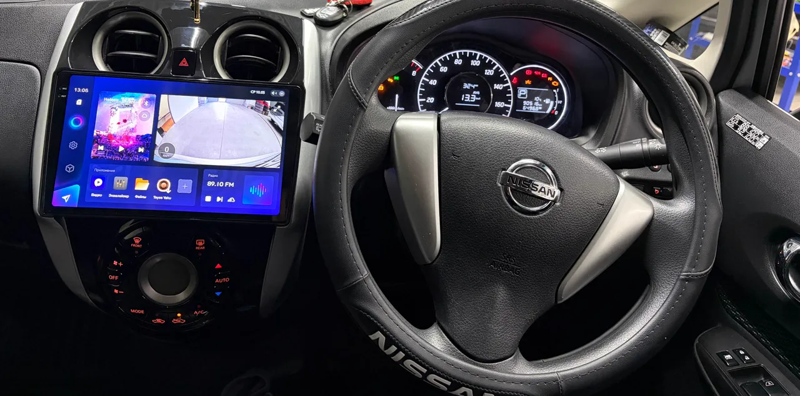
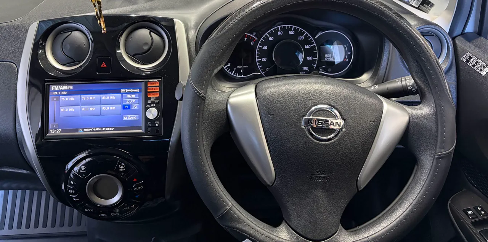
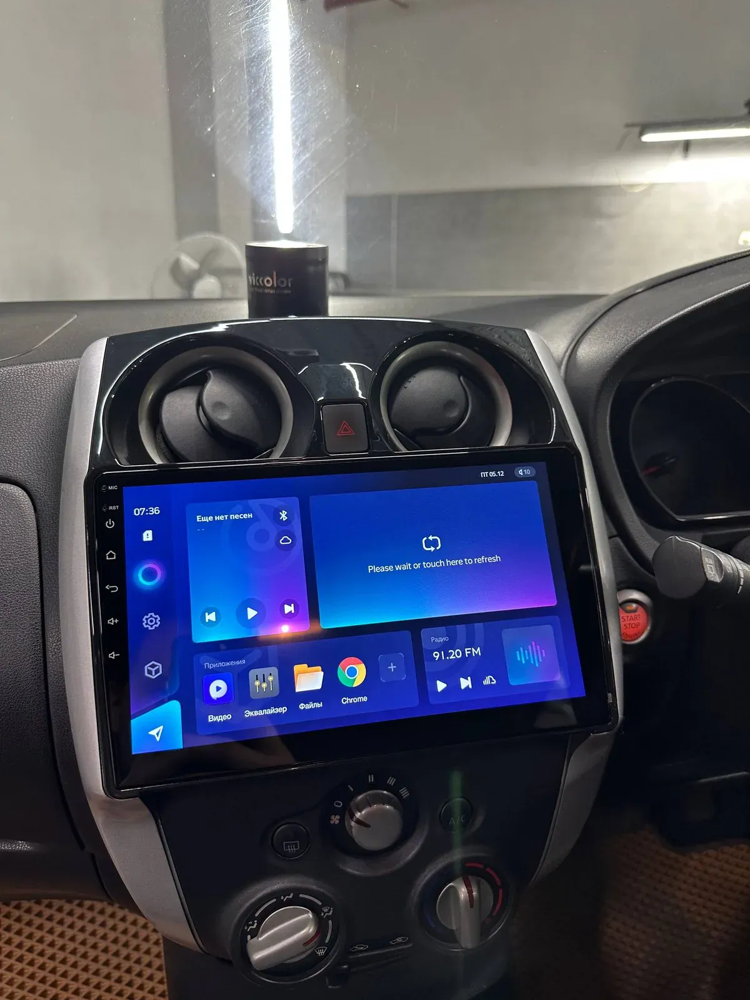

Лучшая магнитола для Ниссан Ноут Е12: что ставить вместо штатной

Nissan Note E12 приехал к нам из Японии, и магнитола в нём до сих пор говорит по-японски.
Меню с иероглифами, в памяти радио станции 76 и 83 МГц, а любимая волна молчит. Навигатор при этом живёт в телефоне, телефон – в держателе, провод зарядки – через всю консоль.

Коротко: что ставить на Note E12
Лучшее, что можно сделать с мультимедиа Note E12 сегодня, – Android-магнитола Teyes в штатную рамку. Экран встаёт под круглые дефлекторы и кнопку аварийки, климат остаётся своим блоком снизу.
В каталоге TEYES Sibir под Note 2 E12 2012–2021 есть Teyes CC3L за 28 700 ₽ и Teyes CC4 Pro за 56 170 ₽. Это цены на сайте 18.11.2026 со скидкой за наличный расчёт, установка головного устройства – от 4 500 ₽. Мы ставили на Note E12 и CC3L, и CC3 – обе работы на фото в статье.
Какой у вас Note: почти всегда японский
Второй Note начали продавать в Японии 3 сентября 2012 года, в Европе – летом 2013-го. В Россию это поколение официально не привозили: Nissan прекратил поставки Note в 2014 году и второго поколения у дилеров не ждали. Поэтому Note E12 в Новосибирске – почти всегда машина из Японии с правым рулём.
- Моторы – трёхцилиндровый 1.2, в том числе с нагнетателем.
- e-Power – с 2 ноября 2016 года в Японии: бензиновый мотор крутит генератор, колёса вращает электромотор. Тогда же Note получил руль с плоским низом.
- Конец выпуска – декабрь 2020 года, когда в Японии начали продавать следующий Note, E13.
Магнитола Teyes под E12 одна на все годы с 2012 по 2021. Обычный Note у вас или e-Power, на подбор рамки это не влияет.
Что стояло в машине с завода
Навигация. Японские комплектации часто брали с «пакетом для установки оригинальной навигации Nissan», а саму навигацию ставил дилер. Такой блок мы и сняли с Note 2014 года: экран Nissan, меню на японском.
Круговой обзор. В топовой версии MEDALIST он стоял с 2012 года, с декабря 2013-го – с распознаванием движущихся предметов.
Климат. На одних версиях автоматический, на других ручной. На двух наших работах оба варианта: на Note 2014 года – круглый блок с кнопкой AUTO, на Note 2016 года – три ручки.

Что раздражает владельцев в 2026 году
Японское меню и карты. Штатная навигация ведёт по картам Японии и говорит по-японски. Для Новосибирска это экран, который проще выключить.
Радио. FM в Японии сейчас 76–95 МГц, до 2011 года было 76–90, наш эфир – 87,5–108 МГц. Магнитола из Японии рассчитана на свой диапазон – на фото выше видно, какие станции в ней сохранены. Конвертер, который ставят импортёры, весь наш диапазон не перекрывает.
Задний ход. На обеих наших работах по Note владельцы заказывали камеру заднего хода.
Звук. На Note 2016 года заодно заменили задние динамики на коаксиальные 16,5 см.
Три пути и какой выбрать
Оставить штатную и ездить с телефоном. Бесплатно, но держатель и провод остаются с вами.
Русифицировать японский блок. Если перевод для вашего блока есть, меню станет русским. Карты Японии и японский диапазон радио останутся.
Поставить Teyes в штатную рамку. Наши карты и станции, интернет по SIM-карте, CarPlay и Android Auto, камера на том же экране. Этот путь закрывает все пункты из списка выше.
Какую Teyes ставить на Note E12
Teyes CC3L – 28 700 ₽: память 4/32 ГБ, экран IPS 1280×720, 8 ядер, слот под SIM-карту с 4G, Wi-Fi, процессор звука DSP, CarPlay и Android Auto, GPS и ГЛОНАСС, вход камеры AHD 1080p.
Teyes CC4 Pro – старшая модель: 56 170 ₽ с памятью 8/128 ГБ, 65 400 ₽ с памятью 12/256 ГБ. На карточке сказано: рамка и проводка в эту цену не входят, их считаем отдельно.
CC3 2K 13 дюймов. У Teyes есть рамка под Note E12 и для большого экрана с кнопками. На сайте этого комплекта с ценой нет, считаем по фото панели.

Что останется от штатного
- Климат. Ручной или автоматический, блок остаётся на своём месте под экраном.
- Дефлекторы и аварийка. Над экраном, как были.
- Камера. Новая камера заднего хода выводит картинку на экран Teyes.
- Кнопки на руле. Есть не у всех Note: на нашем 2014 года руль без кнопок. Если у вашей машины они есть, Teyes CC3L их поддерживает.
- Панель. Экран встаёт в штатное место, панель не пилят.
Наши работы по Note E12
Note 2014 года, Teyes CC3, камера заднего хода и видеорегистратор. Сняли японскую магнитолу Nissan, поставили Teyes в штатное место. На экране теперь камера заднего хода, наше радио и приложения – фото в начале статьи.
Note 2016 года, Teyes CC3L, камера, динамики и питание регистратора. Сделали в сентябре 2026 года. Teyes CC3L встал между дефлекторами и ручками климата, камера заднего хода – над номером. В задних дверях теперь коаксиальные динамики 16,5 см на проставках, к зеркалу выведен кабель питания для видеорегистратора.
Страниц этих работ на сайте пока нет. Все варианты для Note – русификация, замена магнитолы, что сохранится – собраны на одной странице: магнитола и мультимедиа Nissan Note. Комплекты с ценой – в каталоге: Teyes CC3L под Note E12 и Teyes CC4 Pro под Note E12.
TEYES Sibir, официальный установочный центр Teyes в Новосибирске: Сухарная 35 корпус 13, пн–пт с 11:00 до 19:00.